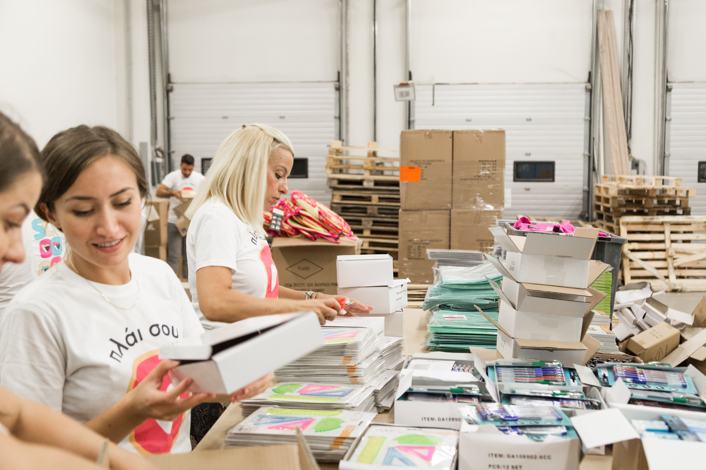
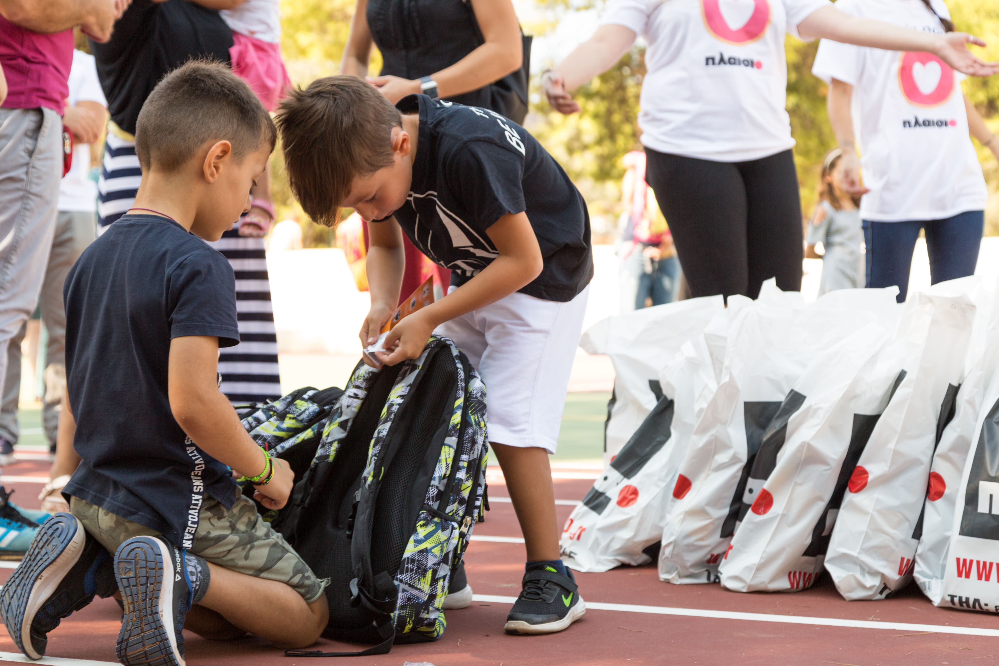

Με αίσθημα ευθύνης και άμεσα αντανακλαστικά σε κάθε έκτακτη ανάγκη, η ομάδα «Πλάι σου» θέλησε να συμβάλλει έμπρακτα στην έκτακτη κατάσταση που προέκυψε μετά τις εκτεταμένες πυρκαγιές στο Μάτι Αττικής. Συγκεκριμένα, οι εθελοντές μας σε συνεργασία με τους αρμόδιους φορείς, βοήθησαν στην οργάνωση & καταγραφή των ειδών που είχαν συγκεντρωθεί προς ανακούφιση των πυρόπληκτων. Επιπλέον, για ένα αισιόδοξο ξεκίνημα της σχολικής χρονιάς, μοίρασαν τσάντες & σχολικά είδη στους μαθητές της περιοχής, μαζί με αμέτρητα χαμόγελα.

